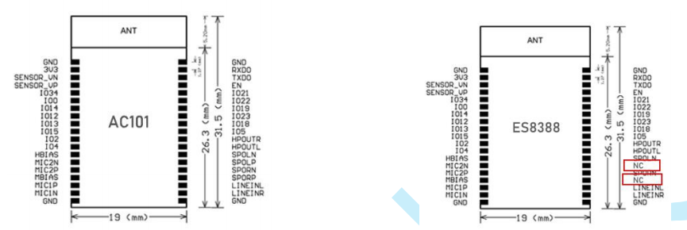
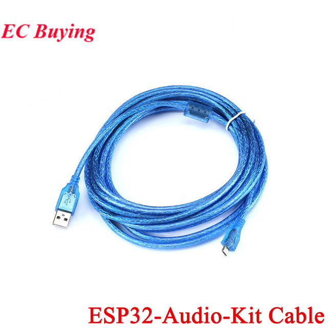
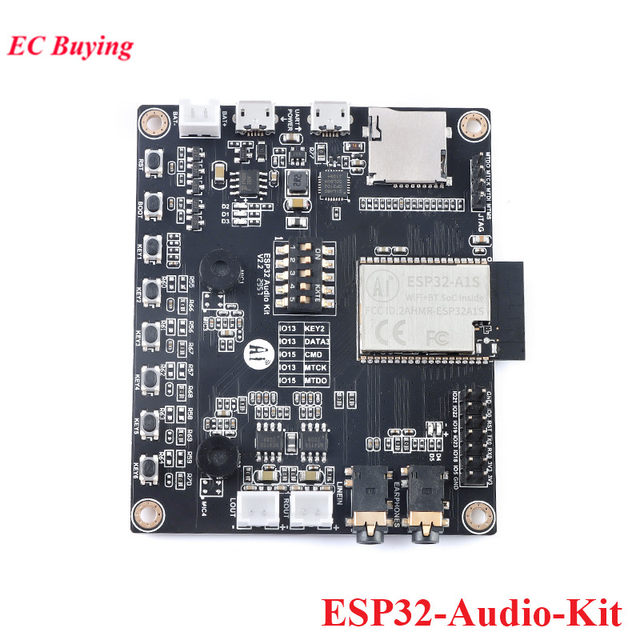
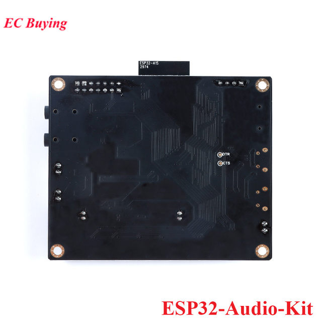

ESP32-Audio-Kit
ESP32-Audio-kit is a small audio development board developed by Ai-Thinker based on the ESP32-A1S module. Most audio peripherals are distributed on both sides of the development board. It supports TF card, headphone output, two microphone inputs and two speaker outputs. , It is convenient for developers to develop quickly.
ESP32-Audio-kit supports music players or recorders that support audio formats, such as MP3, AAC, FLAC, WAV, OGG, OPUS, AMR, TS, EQ, Downmixer, Sonic, ALC, etc.
ESP32-Audio-kit plays music from the following sources: HTTP, HLS (HTTP Live Streaming), SPIFFS, SDCARD, A2DP source, A2DP receiver, HFP, etc. Integrated media services, such as DLNA, VoIP and other network broadcasts, also supports online and offline voice recognition and integration with online services such as Alexa and DuerOS.
There are two versions of ESP32-A1S module, namely the built-in AC101 audio core version and the built-in ES8388 audio chip version. Due to the lack of stock of the chip, the ESP32-A1S module with the built-in AC101 audio core version has been removed from the shelves. ESP32-A1S module with built-in ES8388 audio chip version, see the following document for software and hardware switching.
After the audio codec chip of ESP32-A1S is replaced from AC101 to ES8388, the version of ESP32-A1S module is also
But there are still some differences:

The red box part of (ES8388 version) was originally SPORP and SPOLP of(AC101 version).
Will affect the use, because HPOUTR and HPOUTL are the P poles of the left and right channels, and their corresponding relationship: HPOUTR
Corresponds to SPORP; HPOUTL corresponds to SPOLP.
Therefore, the audio output of the V2.3 module is:
The right channel output is: HPOUTR (positive) and SPORN (negative);
The left channel output is: HPOUTL (positive) and SPOLN (negative).
supplement:
1. Linein and MIC2 of 8388 are shared, they cannot be used at the same time.
2. Both MIC1 and MIC2 can be used as linein, just adjust the configuration by software


